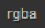
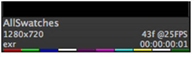
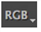
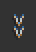
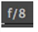
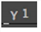
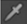

图标
函数
描述

层
例如，选择要输出到查看器的层 向前 运动矢量或 DisparityL 。仅显示剪辑中可用的层-检查剪辑的缩略图，一目了然地查看哪些层存在:

-红色颜色层。
 -绿色颜色层。
-绿色颜色层。
-蓝色层。
-阿尔法层。
 -深度层。
-深度层。
向前运动矢量层。
-向后运动矢量层。
-所有其他自定义层，如差异。
注意: 您可以使用滚动浏览可用层 PgUp 或 PgDn .

通道
例如，选择要输出到查看器的通道 RGB ,单通道, 阿尔法 ,或 Luma .

观众颜色
变换
设置用于在查看器中显示图像的颜色空间，例如 SRGB 和 Rec709 .
注意: 如果在中指定了 OpenColorIO 配置文件 偏好 ,你可能有更多的色彩空间选择。
A/B
观众
输出
单击 A 或 B 下拉列表，然后选择要查看的内容。这可以是选定的轨迹或带有选定标记的轨迹。
当两个查看器缓冲区都包含图像时，启用 擦拭 比较这两个图像。您还可以使用中心下拉菜单设置查看器中图像之间的混合模式，例如 洋葱皮 或 差异 ,以及 A/B 缓冲区配置。
指南
启用或禁用查看器覆盖:
• 标题安全 -为观众准备的任何文本都应该位于该区域内。
• 行动安全 -为观众准备的任何视觉元素都应该位于该区域内。
• 格式中心 -在当前查看器格式的中心添加十字准星。
• 格式 -在查看器中为剪辑或序列添加红色的格式相关框。序列支持多格式剪辑，请参见 查看多格式时间线 欲了解更多信息。
面具
启用或禁用一系列查看器蒙版，例如 16:9 或 1.85: 1 .
裁剪
启用或禁用查看器警告:
• 没有警告 -禁用所有剪辑警告。
• 曝光 -当图像暴露在 (蓝色) 或 (红色) 以下时，提醒您。
注释
单击以启用注释工具栏。注释允许您在查看器中绘制文本并将文本添加到剪辑中。请参阅 注释 欲了解更多信息。
注意: “注释” 按钮还控制现有注释可见性。

ROI
单击并拖动以在查看器中定义感兴趣的区域 (ROI)。当活动时，范围仅显示 ROI 中的信息。

暂停
播放缓存
暂停或释放查看器播放缓存，由查看器下的绿色条表示。
规模
例如，在查看器中设置应用于剪辑的比例 25% , 75% ,或 适合 .
图像质量
设置查看器图像质量，例如 1:1 , 1:4 ,或 1:16 。默认设置, 自动 ,根据查看器的缩放级别调整图像的大小，这可能会以更高的分辨率重新缓存图像。
注意:
红色剪辑的图像质量或代理取决于剪辑的
解码分辨率
在
媒体
面板。
例如，如果您正在查看 4k 文件和
解码分辨率
设置为
一半保费
,1:1 代理值等于 2 K，1:2 等于 1 K，以此类推。

非 RT 播放
设置查看器播放模式:
• 播放所有帧 -默认设置，实时播放所有帧 (取决于硬件)。
• 跳过帧 -在必要时实时跳过播放帧，以保持帧速率。
• 播放所有帧，缓冲 -播放所有帧通过缓冲和播放帧回来，因为它们变得可用。
看穿缺失的媒体
禁用时，时间轴上的任何离线媒体都被视为空白剪辑，因此查看器无法在下方显示轨迹。此设置也适用于剪辑中丢失的帧。
注意: 此控件仅影响当前查看器。
视图
选择查看器显示模式，例如 音频和视频 或 仅视频 .
服从阿尔法
允许您独立于查看器控制 alpha 通道 混合模式 .
• 已启用 -图像中存在的任何 alpha 通道都被视为预乘透明度。
• 禁用(disabled) -Alpha 通道被忽略。
音频延迟
仅为当前查看器设置音频延迟 (以毫秒为单位)。音频延迟允许您通过更改音频播放开始的点来纠正音频和视频同步。
正值导致音频轨道相对于视频轨道更早开始，反之亦然。

增益
在查看之前调整应用于线性输入图像的增益，但不会影响导出的图像。

伽马
在查看变换后调整应用于图像的 gamma，但不会影响导出的图像。
静音/音频
单击可使当前查看器的音频输出静音，或使用滑块控制音频输出级别。
提示: 还可以基于每个轨迹和每个剪辑实例控制音量。请参阅 音频和时间线 欲了解更多信息。

颜色
样品
在查看器中启用或禁用 RGBA 颜色信息栏。
注意: 的 颜色样本 工具显示来自源文件的颜色信息，而不是在查看器颜色变换下拉列表中选择的颜色空间。
请参阅 使用色彩空间 欲了解更多信息。